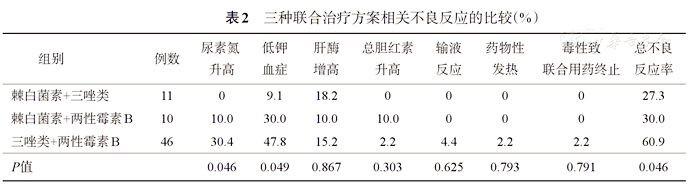

随着化疗个体化的进展、支持治疗的加强及造血干细胞移植（HSCT）的应用，儿童恶性血液病患者的长期存活率已得到显著提高。但恶性血液病患儿由于接受HSCT或放化疗后往往存在黏膜屏障破坏、中性粒细胞缺乏，加之长期糖皮质激素、免疫抑制剂及广谱抗生素使用等高危因素，容易合并侵袭性真菌病（IFD）。然而目前对于儿童联合抗真菌治疗的研究较少。本文回顾性分析我科近3年儿童血液病合并IFD患儿联合抗真菌治疗的方案选择，各方案的疗效、安全性及生存率，进而探讨儿童血液病合并IFD患者联合抗真菌治疗的方案选择。
该研究回顾性分析了2012年1月至2014年12月住院诊断为IFD并初次接受抗真菌药物联合治疗且联合治疗持续时间≥7 d的67例血液病患儿的临床资料。联合治疗方案包括棘白菌素联合三唑类（11例）、棘白菌素联合两性霉素B（10例）、三唑类联合两性霉素B（46例）。

数据显示，67例患儿总有效率为79.1%。单因素分析显示：联合治疗期间是否有粒细胞恢复（P=0.031）、原发疾病状态（P=0.023）和联合治疗持续时间（P=0.046）显著影响联合治疗疗效。多因素分析则显示联合治疗持续时间是IFD患儿的独立预后因素（OR=0.229，95%CI0.061~0.863，P=0.029）。棘白菌素联合三唑类组、棘白菌素联合两性霉素B组和三唑类联合两性霉素B组有效率分别为81.8%、60.0％和82.6%（P>0.05），12周生存率分别为81.8%、80.0％和86.5%（P>0.05）。67例可评价患儿中34例（50.7%）共发生59例次联合治疗相关性不良反应，以低钾血症、尿素氮升高和肝酶增高较为常见。

该研究表明，对于血液病合并IFD患儿，延长联合治疗持续时间（≥14 d）可显著提高疗效。棘白菌素联合三唑类或两性霉素B以及三唑类联合两性霉素B均可作为联合治疗的选择。从疗效、存活率、性价比和剂型等综合考虑，三唑类联合两性霉素B是疗效好、经济安全的治疗方案。
原文来源：中华血液学杂志，2015，36（11）：912-917